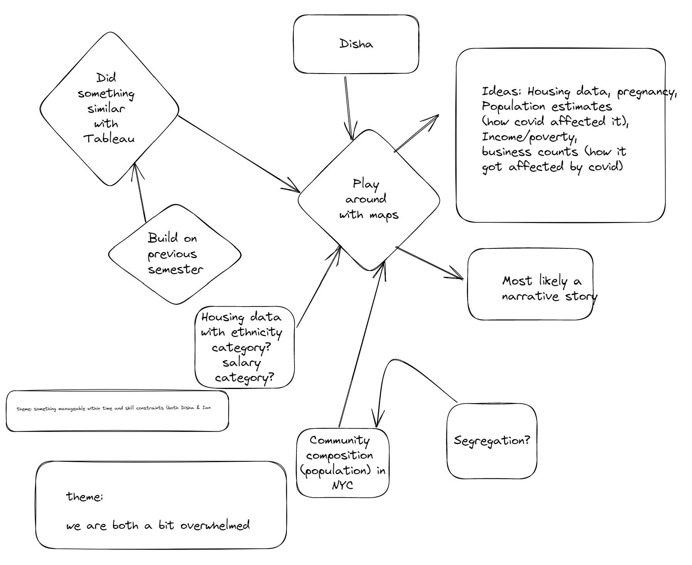

DATA: The topic that I have explored is ‘Factors affecting Pregnancy Rates’. The dataset has been extracted from “Census Bureau” website and the data has been filtered out from the past 12 months of fertility data. The dataset is called “Fertility ACS: 1-year Estimates”. The dataset was in csv format and I manipulated the data using Excel. I chose to transpose my data first and removed unwanted variables and rows and columns that I was not going to use for the project. After that I decided to breakdown my dataset as per different varibale because I was having trouble selecting certain rows and columns. But, most of this manipulation was done using Excel tool. The purpose of the data is to explore various factors that could play their role in creating some relationship with the fertility variables or whether there is any similarity or difference in pattern between various states in the fertility rate aspect. The audience of my project could be anyone from a health student trying to understand the various attributes contributing to fertility rate or it could be the higher authority at decision-making positions who can use this analysis to make some intervention.
ABSTRACT: This project explores various factors that can influence the pregnancy rates in United States of America. I have tried to find patterns between different states using variables such as age and education level attained by the women who were pregnant in the year of 2021. Due to lack of resources, time and skills, I could explore only these two variables. However, Census data explores various other variables such as, race, labor status, poverty status, or whether they took government aid or not. Therefore, this project would have developed in completely different direction if I was not at a beginner level. However, this project has various surprising findings that was acheived only due to visualizations created using D3 library.
PLAN AND PROCESS: The initial stage of the project was very confusing. Iteration did help a bit, but it was all over the place as you can see below. I decided to explore the data on various topics and visualize how I can make a project out of it. After jumping all over the topics, I decided to choose the topic of pregnancy rate. The reason I thought of picking this topic is that I have been surrounded by pregnancy news a lot and therefore, I decided to explore the fertility data of the Census Bureau just for fun. After exploring the data, I thought that maybe it will be fun to create visualizations of it. Therefore, the purpose of the data is to find some facts regarding the women who have given birth and to see if there is any similarity in patterns between different states of America using various filtered variables such as age and education attained by the women.
REFLECTION: While creating the sketches, I thought of achieving a lot. I wanted to make graphs (bar charts, line charts, geomaps) for almost every variable. I visualized a bar graph for the variable race and see how the pattern is across various states and then write down my observation as a text box. Similarly, I wanted to create another graph using variables like age and education. I wanted to make a map chart to show how the ratio of pregnant women and which state has the highest or least number of women. However, in the end, I ended up creating stacked bar chart visualizations to portray how the age and education level of women in the United States correlates with the pregnancy rate. The reason why I chose a stacked bar chart was the various subgroups of my variable race and education level. Each of these variables had at least three subgroups, such as age groups had three subgroups (14-19 years, 20-34 years, 35-50 years), and, education and race had more than three subgroups. If I had to make a bar chart using these variables across 52 states, then the given margin limit would not have let me create a proper and visible visualization. Therefore, I thought that a stacked bar chart would make more sense. Apart from this, due to the limitation of time, I decided to just create two stacked bar charts and explore them using sorting tools and tooltips along with telling a bit of the story that the visualization depicts. Tutorials throughout the class period were very helpful to build some building blocks for the final project. They helped me train myself in developing some great skills in problem-solving and coding. The things I learned from this project include dealing with the errors in the console box, analyzing the error, and trying different ways to solve the error. Though I encountered a lot of failures during the process, it taught me how to look at the errors, and how to find them and made me think beyond my capacity to solve the issue. During the first day of class, I felt so lost with each coding line and what they do, but now I can say that with practice, I have acquired certain skills in making visualizations using D3.js. Therefore, I can say that with practice, I can achieve the desired plan that didn’t happen in this project. Apart from this, I learned that coding with practice is not boring; in fact, I had a lot of fun creating these visualizations even though the process was a little frustrating. The in-class critiques helped a lot with my project. Initially, I was all over the place and wanted to create a lot of things, and didn’t know how to narrow it down to some meaningful visualizations. The in-class activities opened up my creative skills and helped me to enhance my visualization-making skills. I received some really good feedback on how to go ahead with the storytelling. The idea of making stacked bar graphs developed during this process as well. The in-class activities are one of the major reasons why my prospectus differs completely from the final project. Previously I was trying to create simple charts such as bar charts, line charts, and map charts; however, my final project consists of an advanced level chart along with hovering tooltips and sorting functions. I give full credit to my classmates and my professor Mia Szarvas for pushing me beyond my normal limits. Previously, as a part of tutorials, we did horizontal bar graphs. However, stacked bar graphs are the advanced level of bar charts. Firstly, I tried to group the sub-variables to stack on top of each other, but the problem was the bars wouldn’t show up. It took me a day to figure out that JavaScript didn’t consider the counts of women as integers and hence, I had to parse the stacked groups into integers first. Secondly, it was not a very challenging task to make a horizontal bar graph during tutorials (though it seemed very challenging at that time); however, a horizontal stacked bar chart was a big challenge for me. I tried a lot to create one, but in the end, I had to stick with the vertically stacked bar chart. Another challenge was to sort the graphs in ascending and descending order. Creating legends was another challenge for me as well. I think these problems arose because I had a lot of subgroups of the chosen variables (which I haven’t learned to handle in my tutorials). However, for my next project, these problems might not take too long to get solved. Due to the limitation of time and the skills required to build D3 visualizations, I was unable to portray a bigger story than I imagined in the initial stage. I really would like to explore other variables using different forms of charts and see what story those variables have to tell. For example, I really would like to know what graph would help me to visualize the race variable that has at least 7 major subgroups because I had trouble imagining how to portray it all in one graph along with the state variable on X-axis. I would also like to add a map chart that would help me show how many women were working in different states. I think I worked really hard with the two graphs that I created and would not like to remove or change anything from them. I tried my level best to make them perfect. But, in the end, I would like to say that this project really helped me to achieve the goals that I had before coming to this interactive visualization class. I learned to create a website using HTML, JavaScript, and CSS and additionally, I learned to create some cool visualizations using the D3 library.